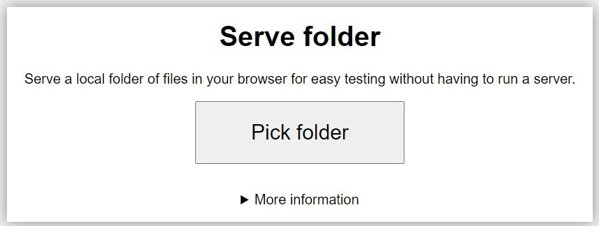
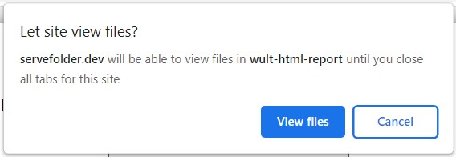
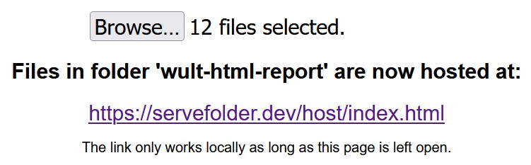
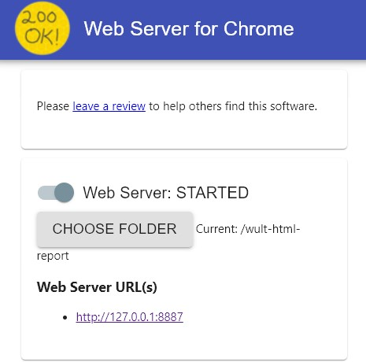

Table of Contents
Suppose you have already generated a wult HTML report using the wult report command. If you wish to view this report locally, such as by copying the report onto your machine and opening index.html, you will need to host the report files locally. This is because modern browsers forbid loading data from local file-systems for security reasons. The following sections explain several methods to view wult HTML reports locally given this limitation.
In addition, read this warning for advice on how to securely view wult HTML reports.
servefolder.dev
This option should work on any modern browser (tested on 10 March 2022 working on Chrome, Firefox and Edge but not Internet Explorer). An internet connection is required to reach the site initially but following this, the report can be viewed independently of an internet connection until the Serve folder tab is closed.
Disclaimer: According to the privacy policy, servefolder.dev does not collect or transmit any personal info and only accesses the files locally in order to perform its function, futhermore the content of the files never leave your device. The code is open source and can be inspected on GitHub. We have audited the code live at servefolder.dev and can confirm that at the time of inspection (03 March 2022), it follows the privacy policy, but we do not continuously security audit the code. Use at your own risk.
- Open the servefolder website.
- 
- Click Pick folder and select the report directory in the dialog that appears.
- 
Your browser will then prompt you to confirm that you would like to share the files with the site. Choose View files or Upload depending on your browser to allow the report to be shared.

The report should now be viewable by clicking on the link shown. If you want to view a different report use the Browse... button. See this tip below if you want to view multiple reports.
Chrome extension
By installing the "Web Server for Chrome" extension, you will be able to serve the reports locally without an internet connection in future through a graphical interface. However this extension is limited to browsers which are compatible with chrome extensions. Furthermore, installing this extension from the chrome web store requires that you sign in with a Google account.
Disclaimer: we have not performed a security audit of this extension and it should be used at your own risk. The code is open source, under an MIT license and can be browsed on GitHub. The privacy policy for this extension is available on this page. At the time of writing (11 March 2022), this privacy policy states that "The application does not collect any user information". However we actively monitor neither the source code nor the privacy policy. Use at your own risk. See Securely view wult HTML reports for more privacy information.
Install the chrome extension from the chrome web store here.
Once the application is installed, it can be opened from the chrome web store, chrome app menu (chrome://apps/) or as a normal program on your computer. For example, on Windows 10, a shortcut will be added to the Chrome Apps directory in the start menu.
- Use the CHOOSE FOLDER button to select the wult HTML report directory of the report you want to view.
- A link should appear below the Web Server URL(s) heading. Click on this link to open and view the report.
See this tip below if you want to view multiple reports.
Python Scripts
To facilitate reading HTML reports locally, we have created a couple of Python scripts. Note that both of them require that your system already has Python installed.
servedir.py
Click here to download the script.
The first script hosts a given directory on localhost. It's recommended usage is as follows:
- Download the script.
- Run the script (e.g. by double-clicking on it in Windows Explorer).
- Select the report directory or a directory containing multiple reports when prompted to select one. Following this, the script opens the default browser at 'localhost:8000'.
- Once you have finished browsing the report or directory, make sure to stop the script you started in step 2. If a new terminal window was created when you ran the script in step 2, you can do this by closing this window.

Usage of 'servedir.py' following the above instructions on Windows 10.
servereport.py
Click here to download the script.
The second script is intended to be downloaded from the repository and placed in a report directory. Running this script will host the directory containing the script on localhost and open a browser to browse the report/directory.
- Download the script.
- Move it into a report directory.
- Run the script (e.g. by double-clicking on it in Windows Explorer). Following this, the script opens the default browser at 'localhost:8000'.
- Once you have finished browsing the report, make sure to stop the script you started in step 2. If a new terminal window was created when you ran the script in step 2, you can do this by closing this window.
Python - CLI
If you have Python installed on your system, you can make use of the 'http.server' module which is part of the standard Python library.
- Open a terminal.
- Move to the report directory using cd <report-directory> where <report-directory> is the path to the directory containing the report.
- Start the HTTP server with the python -m http.server command.
- By default, this will host the report at 'http://localhost:8000/'. Open a web-browser and visit this address to view the report.
- Once you finish viewing the report, close the browser and then use 'Ctrl-C' in the terminal to suspend the web-server.
See this tip below if you want to view multiple reports.
npm
Equally, if you have the Node package manager (npm) installed, you can install and use the 'http-server' package.
- Open a terminal.
- Install the 'http-server' package with npm install -g http-server.
- Move to the report directory using cd <report-directory> where <report-directory> is the path to the directory containing the report.
- Start the HTTP server with the http-server command.
- By default, this will host the report at 'http://localhost:8000/'. Open a web-browser and visit this address to view the report.
- Once you finish viewing the report, close the browser and then use 'Ctrl-C' in the terminal to suspend the web-server.
View multiple reports locally
If you want to view many reports in one session, consider starting the HTTP server in a parent directory of the reports. This will allow you to navigate in the browser between different reports.
Do this by using a parent directory instead of the report directory for any of the above methods.
Securely view wult HTML reports
Please consider disabling all untrusted browser extensions while viewing wult HTML reports.
Browser extensions have varying levels of permissions. For example, some extensions require that the user allows them to access and distribute the data they are viewing in-browser. This means that it is possible for some browser extensions to view and share the contents of wult HTML reports.
For Google chrome, you can inspect the permissions of your extensions by visiting chrome://extensions. In Firefox, the same thing can be done at about:addons.